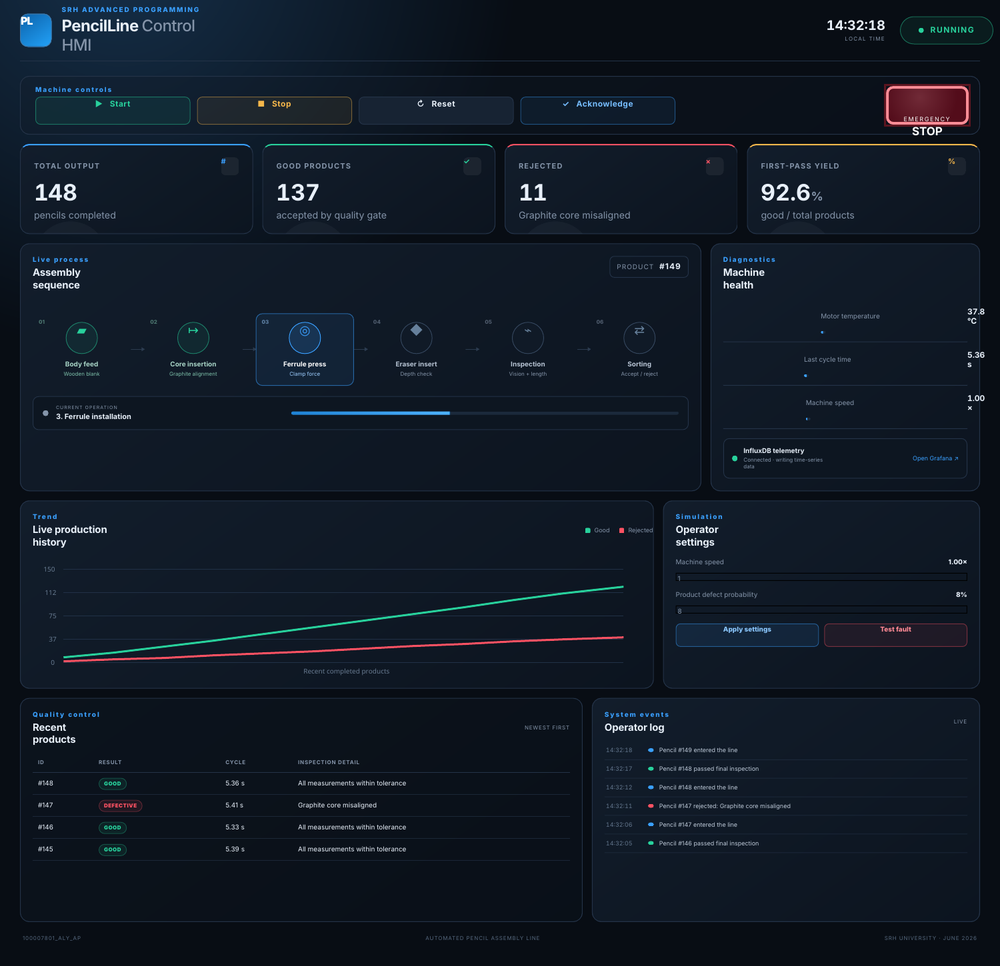
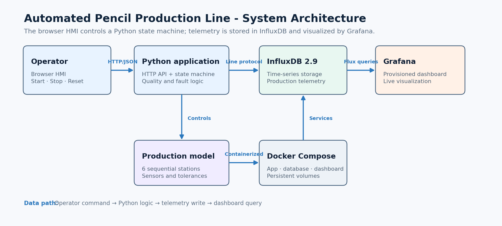

PROJECT OVERVIEW
From raw body to inspected pencil
The program simulates a six-stage pencil assembly line: wooden-body feeding, graphite insertion, ferrule installation, eraser insertion, final quality inspection, and sorting. Each product receives simulated sensor measurements and is marked as good or defective with a specific rejection reason.
The operator uses a responsive industrial HMI with Start, Stop, Reset, Acknowledge, and Emergency Stop controls. The interface shows the active stage, machine condition, yield, temperature, cycle time, product history, alarms, and a real-time event log.

01 · Browser-based control HMIPython implements the state machine and exposes a JSON API while a separate background worker sends line-protocol telemetry to InfluxDB. Grafana is automatically provisioned with panels for temperature, output, rejected products, first-pass yield, machine state, and cycle time.
Docker Compose starts the application, database, and dashboard as one reproducible system. The repository also contains automated tests, persistent volumes, environment configuration, documentation, and a GitHub Actions workflow that publishes this website through GitHub Pages.

02 · System architecture and data path